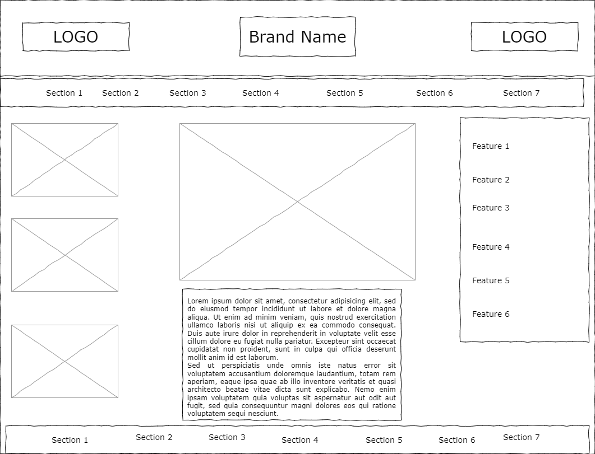
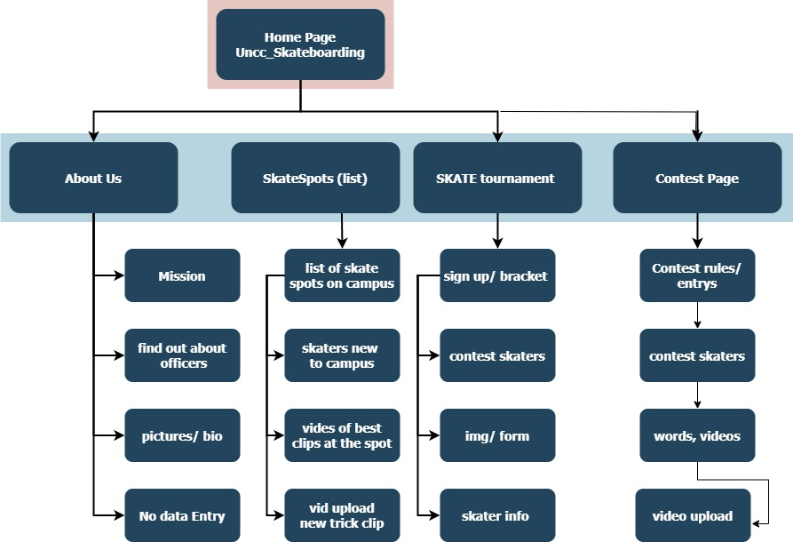
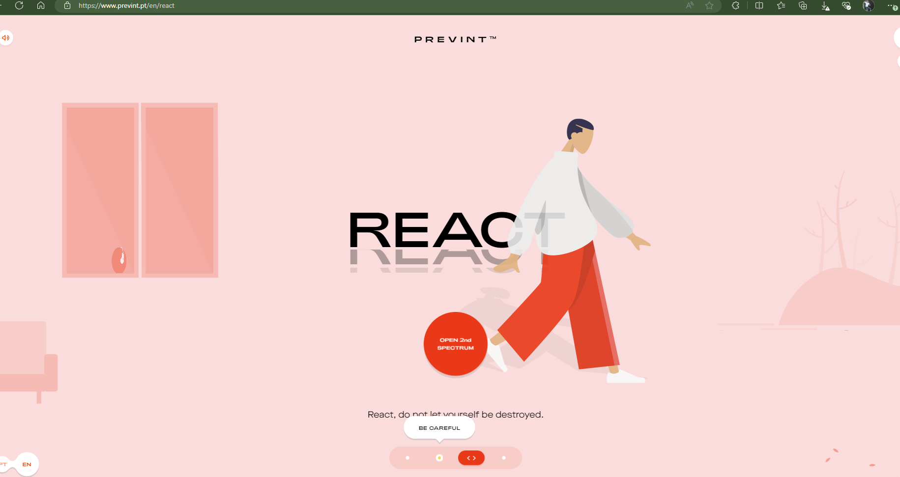

Project Overview:
The project will be a website for the unOfficial UNCC Skateboarding Club. Intended users of the website will be skaters looking to sign up for current events of keep an eye on what is coming up. The content will include skate spots on campus, members of the club, a tourment bracket and details about club leaders. Site will feature dynamicly loading pictures and videos, simple catchy design.
Client Information:
- Client Name: @UNCC_Skateboarding
- Client associated with: : UNCC_Skateboarders
- Client Email: Skaternorm@gmail.com
Wireframe:

Site Map

Page Design
- Implement JS to have about page be dynamicly loading sections, hiding all but one at a time.
- set up side scrolling contest teaser before static page, such as: Prevint
- implement a way to vote on favorite contest clip.
